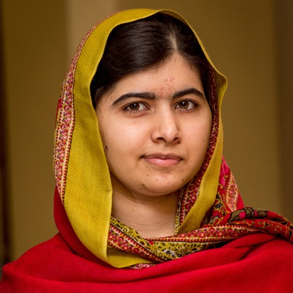

Biography
Malala Yousafzai is a Pakistani education advocate who, at the age of 17, became the youngest person to win the Nobel Peace Prize after surviving an assassination attempt by the Taliban. Yousafzai became an advocate for girls' education when she herself was still a child, which resulted in the Taliban issuing a death threat against her.
Yousafzai was born in Mingora, Pakistan, located in the country's Swat Valley, on July 12, 1997. For the first few years of her life, her hometown remained a popular tourist spot that was known for its summer festivals. However the area began to change as the Taliban tried to take control.
On October 9, 2012, a gunman shot Malala when she was traveling home from school. She survived and has continued to speak out on the importance of education. In 2013, nine months after being shot by the Taliban, Malala Yousafzai gave a speech at the United Nations on her 16th birthday. She highlighted her focus on education and women's rights, urging world leaders to change their policies.
At Yousafzai's 2013 speech at the United Nations, Secretary General Ban Ki-moon pronounced July 12th - Yousafzai's birthday - Malala Day
in honor of the young leader's activism to ensure education for all children.
Yousafzai also published her first book, I Am Malala: The Girl Who Stood Up for Education and Was Shot by the Taliban in October 2013. It is her autobiography and became an international bestseller.
In October 2014, at age 17 Malala Yousafzai became the youngest person to receive the Nobel Peace Prize. She was awarded the Nobel along with Indian children's rights activist Kailash Satyarthi.